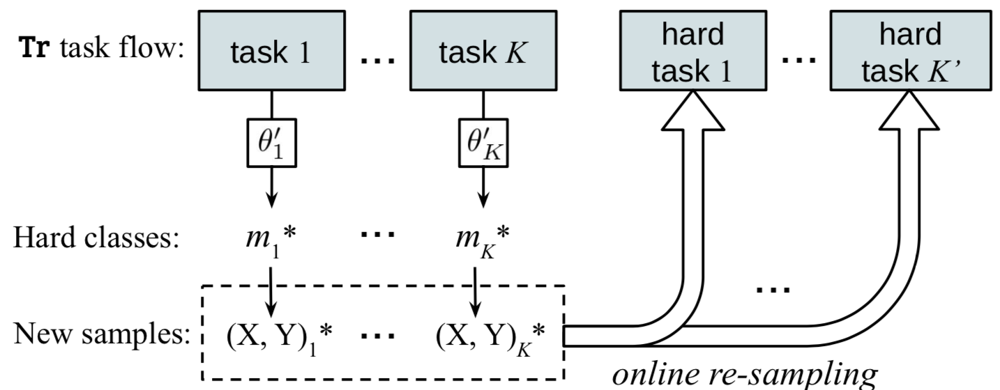
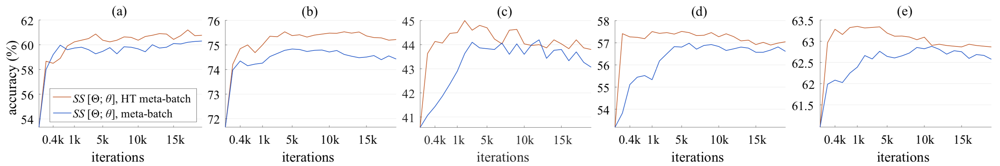

Meta-learning has been proposed as a framework to address the challenging few-shot learning setting. The key idea is to leverage a large number of similar few-shot tasks in order to learn how to adapt a base-learner to a new task for which only a few labeled samples are available. As deep neural networks (DNNs) tend to overfit using a few samples only, meta-learning typically uses shallow neural networks (SNNs), thus limiting its effectiveness. In this paper we propose a novel few-shot learning method called meta-transfer learning (MTL) which learns to adapt a deep NN for few shot learning tasks. Specifically, meta refers to training multiple tasks, and transfer is achieved by learning scaling and shifting functions of DNN weights for each task. In addition, we introduce the hard task (HT) meta-batch scheme as an effective learning curriculum for MTL. We conduct experiments using (5-class, 1-shot) and (5-class, 5-shot) recognition tasks on two challenging few-shot learning benchmarks: miniImageNet and Fewshot-CIFAR100. Extensive comparisons to related works validate that our meta-transfer learning approach trained with the proposed HT meta-batch scheme achieves top performance. An ablation study also shows that both components contribute to fast convergence and high accuracy.
The pipeline of our proposed few-shot learning method, including three phases: (a) DNN training on large-scale data, i.e. using all training datapoints; (b) Meta-transfer learning (MTL) that learns the parameters of scaling and shifting (SS), based on the pre-trained feature extractor. Learning is scheduled by the proposed HT meta-batch; and (c) meta-test is done for an unseen task which consists of a base-learner Fine-Tuning stage and a final evaluation stage. Input data are along with arrows. Modules with names in bold get updated at corresponding phases. Specifically, SS parameters are learned by meta-training but fixed during meta-test. Base-learner parameters are optimized for every task.
(a) Parameter-level fine-tuning (FT) is a conventional meta-training operation, e.g. in MAML [1]. Its update works for all neuron parameters, 𝑊 and 𝑏. (b) Our neuron-level scaling and shifting (SS) operations in meta-transfer learning. They reduce the number of learning parameters and avoid overfitting problems. In addition, they keep large-scale trained parameters (in yellow) frozen, preventing “catastrophic forgetting”.
In our meta-training pipeline, we intentionally pick up failure cases in each task and re-compose their data to be harder tasks for adverse re-training. We aim to force our meta-learner to “grow up through hardness”.
The figure shows the performance gap between with and without hard task meta-batch in terms of accuracy and converging speed. (a)(b) 1-shot and 5-shot on miniImageNet; (c)(d)(e) 1-shot, 5-shot and 10-shot on Fewshot-CIFAR100.
Please cite our paper if it is helpful to your work:
@inproceedings{sun2019mtl,
title={Meta-Transfer Learning for Few-Shot Learning},
author={Qianru Sun and Yaoyao Liu and Tat{-}Seng Chua and Bernt Schiele},
booktitle={CVPR},
year={2019}
}
[1] Chelsea et al. “Model-Agnostic Meta-Learning for Fast Adaptation of Deep Networks.” In ICML 2017;
[2] Oreshkin et al. “TADAM: Task Dependent Adaptive Metric for Improved Few-Shot Learning.” In NeurIPS 2018.